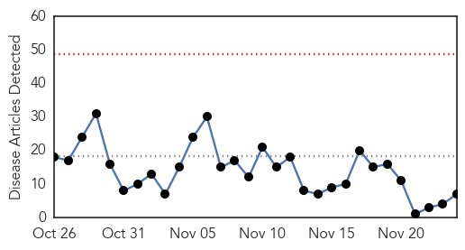
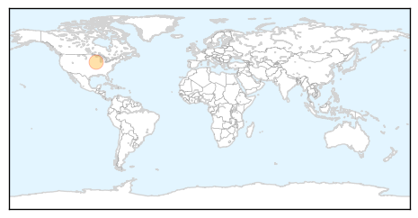

Influenza
30-Day Web Trend
0 alerts, 0 warnings

30-Day Twitter Trend
3 alerts, 0 warnings

Article Locations

Article Confidences

Top Articles:
- 0.992
- Flu bug bites district
- 0.973
- CPS reminds persons to get their seasonal flu vaccine.
- 0.971
- H7N9 avian influenza case reported in Guangdong: CDC
- 0.912
- No flu activity reported in Virginia yet
- 0.842
- Sanofi Pasteur focuses on antigens with broader protection abilities
- 0.699
- Doctors Express Cherry Creek Urgent Care Celebrates Veterans Day With Complimentary Flu Vaccines
- 0.621
- “We cannot turn away our eyes”: highlights from day 1 of the high-level conference on refugee and migrant health
Top Tweets:
- 0.855
- Why should influenza be a public health priority? About 50% of flu patients seek medical care For more reasons: https://t.co/jhQDWqEbxn
- 0.581
- Avian Flu Diary: J Clin Virol: Influenza Co-Infection Leading To A Reassortant Virus https://t.co/HV6wml5RDB https://t.co/VdOvkod9KX
- 0.501
- To Your Good Health: ‘Stomach flu’ is not actually influenza https://t.co/J0WkVfEMnb https://t.co/ya4wQYmya5
Mumps
30-Day Web Trend
2 alerts, 2 warnings

30-Day Twitter Trend
1 alerts, 0 warnings

Article Locations
Article Confidences

Top Articles:
Top Tweets:
-
No tweets found for Nov 24, 2015